Na educação, para Bacich e Moran (2018), as metodologias podem ser compreendidas como “grandes diretrizes que
orientam o processo de ensino e aprendizagem e se concretizam em estratégias, abordagens e técnicas concretas,
específicas e diferenciadas”. Neste sentido, tais açõe desenvolvem-se por meio de planos, políticas e práticas
na busca por alcançar objetivos definidos (MAINARDS et al., 2011).
Contudo, nestas abordagens, o desafio é motivar a participação ativa e atuante dos estudantes,
de tal modo, que proporcionem um maior engajamento dos mesmos, no processo de construção do conhecimento
(CAMARGO; DAROS, 2018).
De modo geral, o termo metodologia caracteriza-se pelo estudo dos caminhos a
serem percorridos para se chegar às metas estabelecidas.
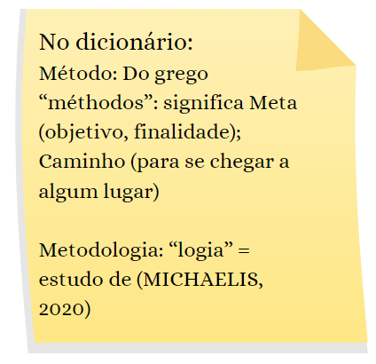
A palavra Estratégia vem de stratègós: de stratos (exército) e ago (liderança), teve sua origem
com a arte de guerra. No entanto, com o passar dos anos, adquiriu um significado mais abrangente,
envolvendo métodos, planos ou manobras que são usadas para que se alcance um objetivo ou resultado.
Diante disso, na área educacional existem alguns tipos de estratégias que são utilizadas pelos docentes,
de modo a tornar o aprendizado do estudante mais ativo, conforme pode-se verificar no quadro 1:
Estratégia
Tipo de Estratégia
Forma de Aplicação
1
Contrato de Aprendizagem
Acordo entre os sujeitos, com foco na autonomia e responsabilidade do aluno.
2
Análise dos fatores ou ideias
Discussão e debates sobre temas, problemas ou assuntos.
3
Aplicativos na Educação
Utilização dos Aplicativos em diferentes contextos do trabalho pedagógico.
4
Aprendizagem em espiral
Oportunizar que o aluno se expresse, com exercício de argumentação e análise, finalizando com uma síntese reflexiva.
5
Jogo de Cartas
É uma estratégia que pode ser realizada com a turma toda ou em pequenos grupos, a partir de questões retiradas de um artigo científico sobre o tema da aula.
6
Diagrama dos cinco Porquês
Atividade colaborativa, que inicia com uma questão problema abrangente e, vai se dividindo em vários porquês menores que irão retratando as possíveis soluções.
7
Timeline
Esta estratégia pode ser usada com qualquer tema e, os alunos devem buscar a evolução, descobertas ou tendências para colocar em uma ordem cronológica. Pode ser realizada individual ou em grupo.
Fonte: Adaptado de Camargo; Daros (2018).
“Independente de um modelo ou de uma nova estratégia inovadora, toda prática educativa
deve ter caráter intencional e necessita de planejamento e sistematização” (CAMARGO; DAROS, 2018, p. 5).
Um modelo de aprendizado de forma ativa, requer o desenvolvimento de competências específicas,
tanto do estudante como do educador. Para isso, é importante compreender que, promover a
interação e o engajamento do aluno, perpassa por deixá-lo consciente de suas responsabilidades e
deveres (CAMARGO; DAROS, 2018). Neste caminho, para a construção de estratégias inovadoras e
centradas na participação ativa do sujeito, destacam-se as Metodologias Ativas.
Assim, tais metodologias podem ser definidas como um conjunto de estratégias, ações ou abordagens,
que propõe o protagonismo do aluno na construção do seu processo de aprendizagem, mediante a prática e
a vivência de situações reais. Dessa forma, baseiam-se na formação de um aluno crítico e reflexivo,
capaz de observar o seu redor e propor soluções que modifiquem a realidade (VILLARDI et al., 2015).
Para Paulo Freire, "a melhor maneira de refletir é pensar a prática e retornar a ela para transformá-la. Portanto, pensar o concreto, a realidade, e não pensar pensamentos” (GADOTTI, 2005, p.254).
A aprendizagem pela prática desafia o professor a organizar espaços diversificados, que
proporcionem múltiplas oportunidades. Portanto, ele poderá criar ambientes que valorizem a
experiência do aluno e despertem todos os seus sentidos, assim, aprender torna-se uma aventura e
todos são desafiados a pesquisar, criar e realizar.
Centradas no aluno, as Metodologias Ativas servem de base, para o alcance de patamares maiores no
processo de construção do conhecimento (MORAN, 2015). Neste sentido, reúnem um conjunto de estratégias de
ensino, que envolvem o aluno em um ambiente de aprendizagem “flexível, interligado e híbrido”
(BACICH, MORAN, 2018).
Clique abaixo para saber mais sobre as Metodologias Ativas:
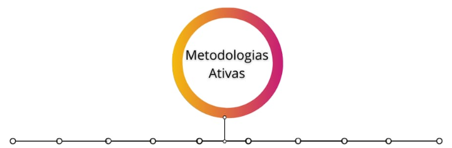
Sala de Aula Invertida
O matemático e engenheiro Salman Khan, formado pela Universidade Harvard e pelo MIT, movimentou o
sistema educacional ao propor um modelo de ensino conhecido como “sala de aula invertida” (KHAN, 2013).
A ideia surgiu quando Khan decidiu gravar vídeos com a explicação narrada ao fundo e números aparecendo
em uma lousa para ajudar uma prima que possuía dificuldades em matemática, mas morava distante (KHAN, 2013).
Os vídeos se tornaram tão populares que o educador largou o mercado financeiro para criar a Khan Academy, que usa o mesmo formato para ensinar matemática, ciências, programação e
humanidades.
Invertendo a Sala de Aula:
A Sala de Aula Invertida propõe a inversão do modelo tradicional, mais conhecido na formato em que o
estudante tem contato com o conteúdo na sala de aula, e aplica este conteúdo sozinho em casa.
A nova proposta apresentada por esta MA consiste em proporcionar ao estudante um primeiro contato com os conceitos em casa,
antes de chegar na sala de aula, depois ele é auxiliado pelo educador em relação às dúvidas e à resolução de questões.
Em inglês essa metodologia é conhecida como Flipped Classroom uma abordagem pela qual o aluno assume a responsabilidade do
estudo teórico e a aula presencial serve como aplicação prática dos conceitos estudados (JAIME; KOLLER; GRAEML, 2015).
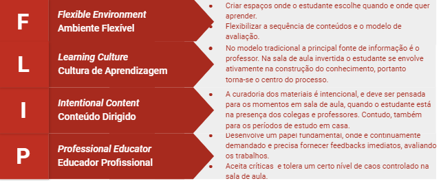
Adaptado de FLN (2014).
Antes de começar observe algumas regras básicas:
1. As atividades propostas em sala de aula envolvem questionamentos, resolução de problemas, todas atividades de aprendizagem ativa, que estimulam o estudante a retomar e aplicar o material visto em casa.
2. O feedback é imediato durante as atividades em sala de aula.
3. Para incentivar a participação dos estudantes, as atividades desenvolvidas em sala de aula e os estudos em casa, são avaliados, ou seja, valem nota.
4. As atividades planejadas e os materiais construídos precisam ser bem estruturados.
(VALENTE, 2014).
Referências:
FLIPPED LEARNING NETWORK (FLN).The four pillars of F-L-I-P? 2014.
Disponível aqui. Acesso em: 31 de julho de 2020.
JAIME, Manuel Platero, KOLLER, Manuel Ramón Tejeiro, GRAEML, Felipe Reis. La aplicación de Flipped Classroom en el
curso de Dirección Estratégica. In: JORNADAS INTERNACIONALES DE INNOVACIÓN UNIVERSITARIA, 12., 2015, Madrid.
Disponível aqui. Acesso em: 31 de julho de 2020.
VALENTE, José Armando.Blended learning e as mudanças no ensino superior: a proposta da sala de aula invertida.
Educar em Revista, núm. 4, 2014, pp. 79-97. Disponível aqui.
Acesso em: 30 de março de 2020.
Jigsaw
Desenvolvida em 1970, por Elliot Aroson, a metodologia Jigsaw (do inglês quebra-cabeça)
está baseada na aprendizagem por meio do trabalho em grupo. Organizada em etapas bem
estruturadas, permite que o estudante aprofunde os conteúdos.
O método privilegia um ambiente cooperativo, permeado pela troca de ideias e interação
dos estudantes. Assim, os sujeitos envolvidos na atividade desenvolvem suas habilidades
cognitivas estabelecendo relações sociais.
(MARCELINO; SOUSA, 2018)
O método propõe uma dinâmica que envolve dois grupos:
Grupo base - Neste grupo, divide-se o conteúdo em subtemas, e cada estudante investiga e aprofunda uma parte do conteúdo.
Grupo especialista - O grupo de especialistas reúne os estudantes por subtema, assim eles podem discutir as diferentes visões, esclarecer dúvidas com os colegas e estabelecer qual a linha de raciocínio para a solução do problema ou apresentação de nova proposta.
Reunidos novamente no grupo base, os especialistas tornam-se porta voz daquele conteúdo e tem a missão no grupo de apresentá-la aos demais colegas. (MARCELINO; SOUSA, 2018).
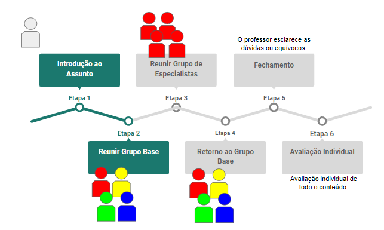
Referências:
MARCELINO, Valéria; SOUSA, Priscila G. de (org.). Metodologias para o ensino: teoria e exemplos de sequências didáticas. Campos dos Goytacazes: Brasil Multicultural, 2018. 80 p.
Gamificação
O programador de computadores e pesquisador britânico Nick Pelling utilizou o termo Gamification pela primeira vez em 2002.
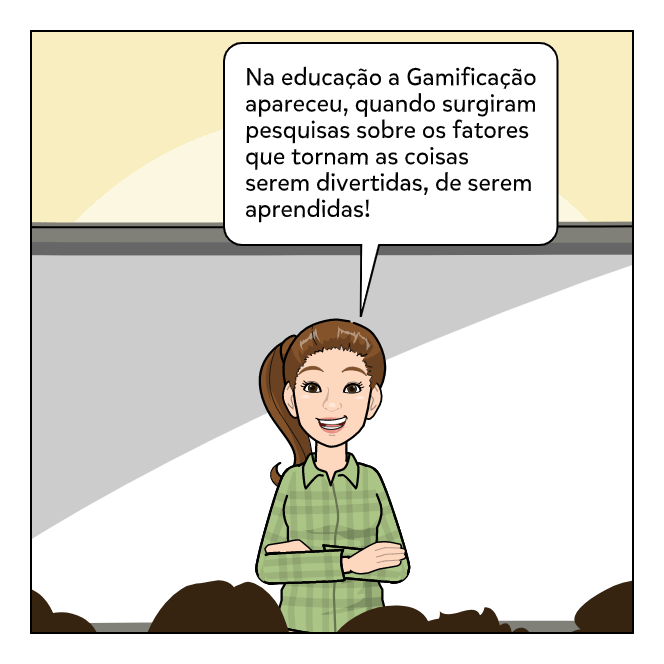
Gamification (Gamificação):
Consiste no processo de utilização de pensamento de jogos e dinâmica de jogos para engajar
audiências e resolver problemas.” (Gabe Zichermann apud ALVES, 2014).
Significa a aplicação de elementos utilizados no desenvolvimento de jogos eletrônicos, tais como estética,
mecânica e dinâmica, em outros contextos não relacionados a jogos. Onde:
A estética trata das emoções do jogador, resulta das relações entre a mecânica e a dinâmica do jogo.
A mecânica é o elemento que permite a orientação do jogador. Por fim, a dinâmica representa os elementos de
interação entre o jogador e a mecânica do jogo (KAPP, 2012).
Etapas:
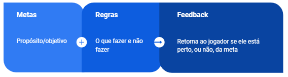
Elementos da Gamificação aplicados a educação:
Progresso:
O aluno pode acompanhar visualmente seu progresso no curso ou atividade, quais ele já concluiu e quais ainda faltam.
Medalhas e Conquistas (badges):
Os badges podem ser atribuídos manual ou por meio de um sistema, a partir de critérios como a conclusão de uma atividade dentro do prazo estabelecido.
Missões e Desafios:
O professor pode criar missões para os seus alunos, assim eles podem alcançar outros níveis de progresso ou mesmo badges.
Níveis:
A forma mais simples de criar níveis na atividade é dividi-la, onde cada nível pode ser diferente. Para ampliar esta técnica o professor pode criar estes níveis com uma dificuldade diferente (básico, intermediário, avançado).
Feedbacks:
O feedback implica em estabelecer contato com o aluno. Nesta técnica podem ser utilizados diferentes recursos, cartões, encontros, ou mensagens. Trata-se de um elemento importante, no qual o professor pode acolher o aluno com boas-vindas, acompanhá-lo durante as atividades com dicas e explicações, ou ainda, motivá-lo a seguir em frente.
Referências:
KAPP, Karl M. The gamification of learning and instruction: game-based methods and strategies for training and education. Hoboken, NJ: John Wiley & Sons, 2012.
ALVES, Flora. Gamification: Como criar experiências de aprendizagem engajadoras. São Paulo: DVS Editora, 2014.
Aprendizagem Baseada em Projetos
A Aprendizagem Baseada em Projetos (ABP), pode ser considerada uma MA que consiste em motivar os alunos a agir de forma cooperativa na resolução de um problema concreto (BENDER, 2014).
A ABP envolve pesquisa, investigação, colaboração e multidisciplinaridade, resultando, na definição
e apresentação de um produto final, que pretende solucionar um determinado problema (BACICH; HOLANDA, 2020).
Etapas da Aprendizagem Baseada em Projetos:
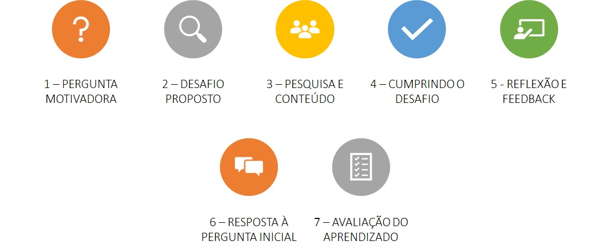
Fonte: Compilação dos autores com base em LORENZONI (2016).
Referências:
BACICH, Lilian; HOLANDA, Leandro (org.). STEAM em Sala de Aula: a aprendizagem baseada em projetos integrando conhecimentos na educação básica. Porto Alegre: Penso, 2020.
BENDER, Willian N. Aprendizagem baseada em projetos: educação diferenciada para o século XXI. Porto Alegre: Penso Editora Ltda., 2014.
LORENZONI, Marcela. Aprendizagem Baseada em Projetos (PBL) em 7 passos: Infográfico. Geekie, 2016. Disponível: neste link. Acesso em: 10, agosto de 2020.
Estudo de Caso
O professor sugere um caso, que representa uma situação ou processo, e apresenta material bibliográfico sobre o assunto.
O aluno reunido em grupos ou individualmente, analisa o caso e propõe uma solução. Assim, o caso apresentado pode
envolver vários assunto, por isso, o estudo de caso é uma metodologia que pode ser aplicada para atividades
multidisciplinares (CORTELAZZO et al., 2018).
Além disso, a metodologia proporciona aos alunos a oportunidade de desenvolver seu potencial de
argumentação e síntese, durante o processo.
O caso que será apresentado para os alunos, precisa ser bem elaborado, de modo que,
eles sejam capazes de aplicar todos os seus conhecimentos ao imaginar a situação.
Além disso, podem pensar em estratégias, alternativas, relacionando conceitos e colaborando com os colegas
(OTTONELLI et al., 2015).
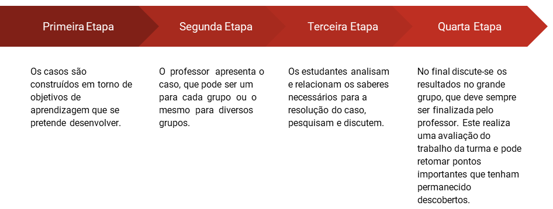
Fonte: Compilação dos autores com base em OTTONELLI et al., 2015
Referências:
CORTELAZZO, Angelo Luiz et al. Metodologias Ativas e Personalizadas de Aprendizagem: para refinar seu cardápio metodológico. Rio de Janeiro: Alta Books, 2018. 224 p.
OTTONELLI, Janaina et al. Estudo de Caso: metodologia de ensino-aprendizagem na educação profissional. Boletim Técnico Senac, Rio de Janeiro, v. 41, n. 3, p. 54-69, set/dez, 2015.
Design Thinking
A metodologia Design Thinking (DT) traz uma proposta centrada no ser humano, o objetivo continua ser
a resolução de um problema. Contudo para isso busca-se compreender as necessidades do sujeito impactado pelo problema.
Neste sentido, o processo compreende em desenvolver estratégias criativas e inovadoras, buscando de forma empática
compreender as necessidades das pessoas envolvidas no problema. As etapas preveem escuta, observação, investigação,
projecção de soluções, prototipagem e implementação (FILATRO; CAVALCANTI, 2018).
Na educação pode-se abordar esta metodologia a partir de quatro etapas:
O caso que será apresentado para os alunos, precisa ser bem elaborado, de modo que,
eles sejam capazes de aplicar todos os seus conhecimentos ao imaginar a situação.
Além disso, podem pensar em estratégias, alternativas, relacionando conceitos e colaborando com os colegas
(OTTONELLI et al., 2015).
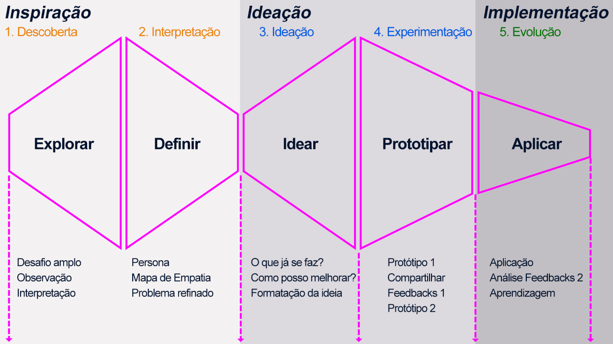
Fonte: Compilação das autoras baseado em MICHELS; DANILEVICS (2019)
Referências:
FILATRO, Andrea; CAVALCANTI, Carolina Costa. Metodologias inov-ativas na educação presencial, a distância e corporativa. São Paulo: Saraiva Educação SA, 2018.
MICHELS, Ana. DANILEVICS, ngela. Curso Práticas Pedagógicas Inovadoras. Escola de Desenvolvimento de Servidores da UFRGS. 2019.
Peer Instruction
A Peer Instruction pode ser conhecida também por Aprendizagem em Pares ou Instrução por Pares,
foi criada pelo professor de Física da Universidade de Harvard Eric Mazur. A metodologia inicia com a
exposição do conteúdo, pelo professor, depois um teste conceitual e individual, então, de acordo com os
resultados dos testes o professor solicita que em pares tentem chegar a um consenso sobre a resposta, e o
teste se repete até que cheguem a um número assertivo de respostas maior que 70% (FILATRO; CAVALCANTI, 2018).
Apesar de abordar uma aprendizagem mais conceitual, a Peer Instruction se caracteriza como ativa,
na medida em que, os alunos precisam interagir socialmente e consensuar sobre as questões.
Passo-a-passo da metodologia Peer Instruction:
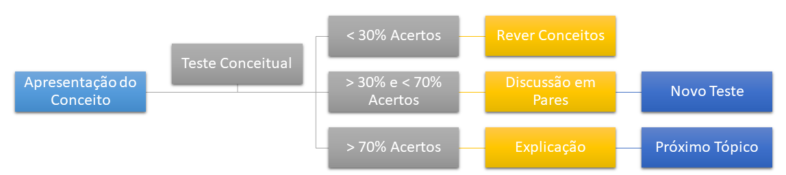
Fonte: Compilação dos autores baseado em FILATRO; CAVALCANTI (2018)
Referências:
FILATRO, Andrea; CAVALCANTI, Carolina Costa. Metodologias inov-ativas na educação presencial, a distância e corporativa. São Paulo: Saraiva Educação SA, 2018.
Aprendizagem Baseada em Problemas
A metodologia da Aprendizagem Baseada em Problemas aborda o conteúdo na forma de situações-problema, e
envolve a aplicação prática do tema. O aluno necessita articular os conceitos para a resolução do problema proposto
(SOUZA; DOURADO, 2015).
O professor tem o papel de apoiar a criatividade e a iniciativa dos alunos, para que possam chegar à
uma solução (MUNHOZ, 2016). Enquanto o aluno, articula seus conhecimentos e habilidades em busca de uma solução
para o desafio proposto (FERRARINI; SAHEB; TORRES, 2019).
Sugere-se como etapas gerais:
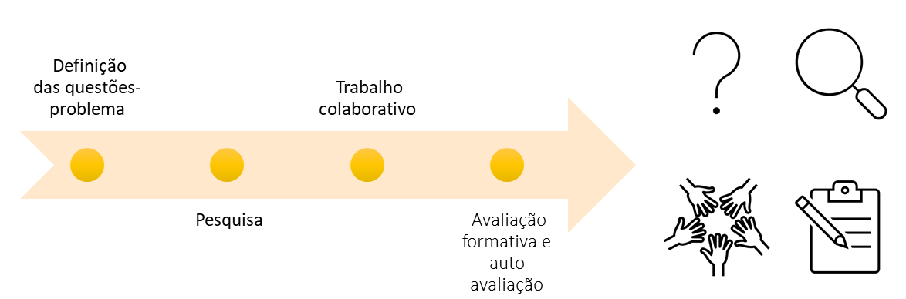
Em detalhes, podemos descrever sete etapas:
1. Identificação do cenário do problema.
2. Definição do problema por meio da análise dos fatos advindos do contexto.
3. Formulação de hipóteses a partir do conhecimento existente.
4. Identificação de novas necessidades de aprendizado, com a elaboração de plano de estudos.
5. Execução de pesquisa em busca de novos aprendizados – auto direcionado e com socialização no grupo.
6. Aplicação dos conhecimentos adquiridos, gerando novas hipóteses e selecionando a melhor solução, sua elaboração e apresentação.
7. Avaliação, abstração e reflexão sobre o processo de aprendizado.
Fonte: HMELO-SILVER, 2004.
Referências:
FERRARINI, Rosilei; SAHEB, Daniele; TORRES, Patricia Lupion. Metodologias ativas e tecnologias digitais. Revista Educação em Questão, v. 57, n. 52, 2019.
HMELO-SILVER, Cindy E. Problem-based learning: What and how do students learn?. Educational psychology review, v. 16, n. 3, p. 235-266, 2004.
MUNHOZ, Antonio Siemsen. Aprendizagem Baseada em Problemas: ferramenta de apoio ao docente no processo de ensino aprendizagem. São Paulo: CENGAGE, 2016.
SOUZA, Samir Cristino; DOURADO, Luis. Aprendizagem baseada em problemas (ABP): um método de aprendizagem inovador para o ensino educativo. Holos, v. 5, p. 182-200, 2015.
Aprendizagem Baseada em Equipes
A Aprendizagem Baseada em Equipes (ABE) foi criada no final dos anos 70 pelo professor de gestão e negócios Larry Michaelsen,
da Universidade de Oklahoma (EUA) (OLIVEIRA, ARAÚJO, VEIT, 2016). O método tem como foco melhorar a aprendizagem e
desenvolver habilidades de trabalho colaborativo, através de uma estrutura que envolve: o gerenciamento de equipes de
aprendizagem, tarefas de preparação e aplicação de conceitos, feedback constante e avaliação. A ideia é que os alunos se
sintam responsáveis por sua aprendizagem, e ainda, pela dos colegas (MICHAELSEN, KNIGHT; FINK, 2004).
Os alunos se envolvem em atividades de preparação individual e em equipe, que consistem em estudo prévio extraclasse; resolução de questões
conceituais em sala de aula e, realização de tarefas de aplicação dos conceitos (resolução de problemas em equipe), também em classe. As
equipes, são estrategicamente montadas pelo professor e são fixas durante a aplicação do método. A avaliação envolve os
alunos avaliarem os seus colegas de equipe ao longo do trabalho (MICHAELSEN, 2004).
Principais fases:
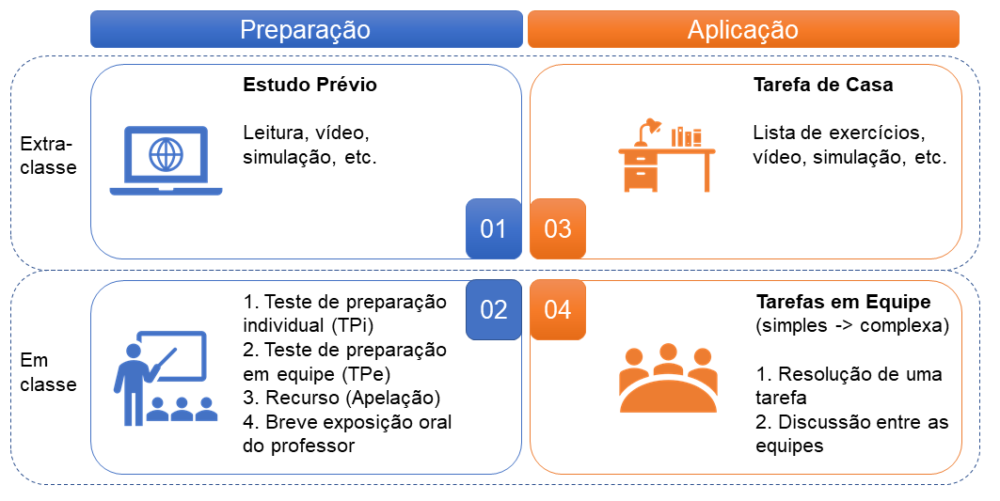
Fonte: Compilação dos autores baseado em OLIVEIRA (2018)
Referências:
MICHAELSEN, L. K. Getting Started with Team-Based Learning. In: MICHAELSEN, L. K.; KNIGHT, A. B.; FINK, L. D. (Org.). Team-Based Learning: a transformative use of small groups in college teaching. Sterling, VA: Stylus Publishing, LLC, 2004. p. 27-50.
MICHAELSEN, L. K.; KNIGHT, A. B.; FINK, L. D. Team-Based Learning: A transformative use of small groups in college teaching. Sterling, VA: Stylus Publishing, LLC, 2004.
OLIVEIRA, Bruno Luciano Carneiro Alves de et al. Team-based learning como forma de aprendizagem colaborativa e sala de aula invertida com centralidade nos estudantes no processo ensino-aprendizagem. Revista brasileira de educação médica, v. 42, n. 4, p. 86-95, 2018.
OLIVEIRA, Tobias Espinosa; ARAUJO, Ives Solano; VEIT, Eliane Angela. Aprendizagem Baseada em Equipes (Team-Based Learning): um método ativo para o ensino de física. Caderno Brasileiro de Ensino de física, v. 33, n. 3, p. 962-986, 2016.
Aprendizagem Baseada em Jogos
O jogo é um conjunto de atividades que envolvem um ou mais jogadores. Este tem objetivos, restrições, recompensas e
consequências. Um jogo é direcionado por regras, e em alguns aspectos não representa a realidade. Finalmente, um jogo
envolve competição, ainda que, esta seja consigo mesmo (DEMPSEY et al., 2002).
Neste sentido, a Aprendizagem Baseada em Jogos (ABJ) faz referência a uma abordagem de aprendizagem
inovadora derivada do uso de jogos educacionais de computador, ou diferentes aplicações de software
construídas para educação. A finalidade da ABJ é o apoio à aprendizagem, a avaliação e análise de alunos e
melhoria do ensino (TANG; HANNEGHAN; EL RHALIBI, 2009).
A partir da ABJ a avaliação do aluno pode ser realizada sob vários aspectos:
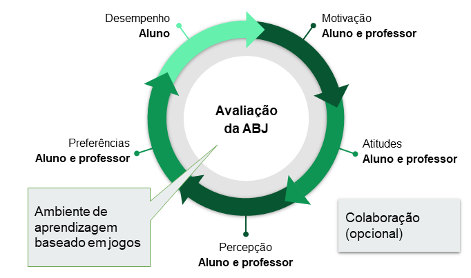
Fonte: Compilação dos autores baseado em HAINEY, 2009.
Referências:
DEMPSEY, John V. et al. Quarenta jogos de computador simples e o que eles podem significar para os educadores. Simulação e jogos , v. 33, n. 2, p. 157-168, 2002.
HAINEY, Thomas; CONNOLLY, Thomas; BOYLE, Liz. A Refined Evaluation Framework for Games-Based Learning. In: ECGBL - EUROPEAN CONFERENCE ON GAMES-BASED LEARNING, 4., 2009, Reading, Uk. Proceedings [...] . Reading, Uk: Aarhus University Copenhagen, 2009. p. 97-105.
TANG, Stephen; HANNEGHAN, Martin; EL RHALIBI, Abdennour. Introdução à aprendizagem baseada em jogos. In: Avanços no aprendizado baseado em jogos para interfaces multi-sensoriais de computador humano: técnicas e práticas eficazes . Hershey, Pensilvânia, EUA: IGI Global, 2009. p. 1-17.
Desafios
Referências
BACICH, Lilian; MORAN, José. Metodologias ativas para uma educação inovadora: uma abordagem teórico-prática. Porto Alegre: Penso, 2018.
CAMARGO, Fausto; DAROS, Thuinie. A sala de aula inovadora: estratégias pedagógicas para fomentar o aprendizado ativo. Porto Alegre: Penso, 2018.
GADOTTI, Moacir. História das ideias pedagógicas. São Paulo: Ática, 2005.
GRAMÁTICA.NET.BR, Disponível: neste link. Acessado em 14.09.2020.
MAINARDES, E. W.; ALVES, H.. Stakeholder theory: issues to resolve. Management Decision, v.49, n.2, p.226-252, 2011.
MICHAELIS moderno dicionário da língua portuguesa. São Paulo: Melhoramentos. Disponível: neste link. Acesso em: 11 set. 2020.
MORAN, José. Mudando a educação com metodologias ativas. Coleção mídias contemporâneas. Convergências midiáticas, educação e cidadania: aproximações jovens, v. 2, n. 1, p. 15-33, 2015.
VILLARDI, Marina Lemos; CYRINO, Eliana Goldfarb; BERBEL, Neusi Aparecida Navas. A problematização em educação em saúde: percepções dos professores tutores e alunos [online]. São Paulo: Editora UNESP; São Paulo: Cultura Acadêmica, 2015, 118 p. ISBN 978-85-7983-662-6.